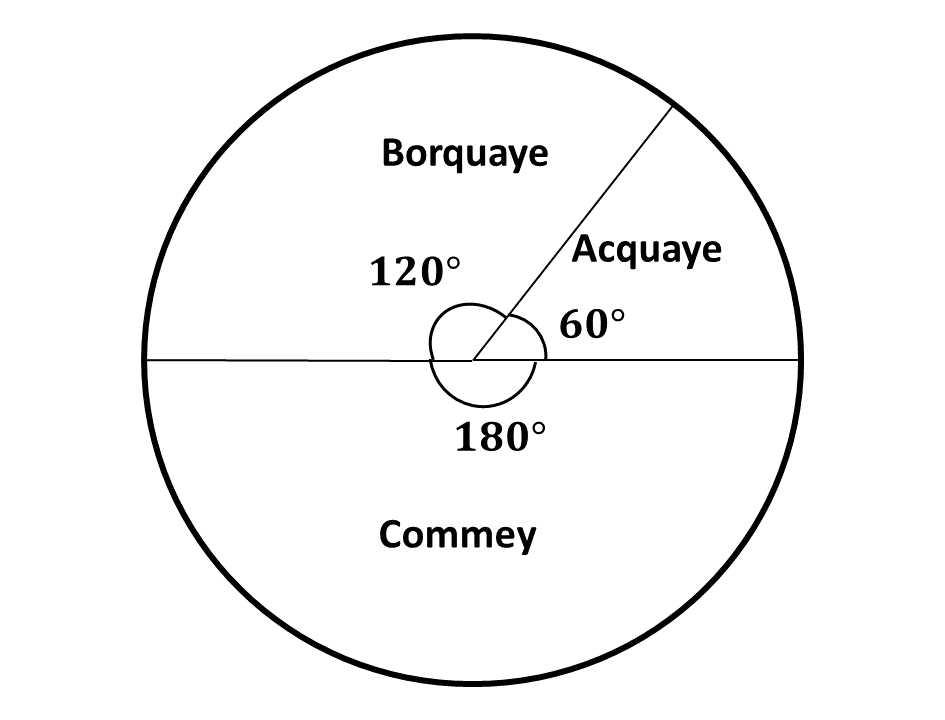
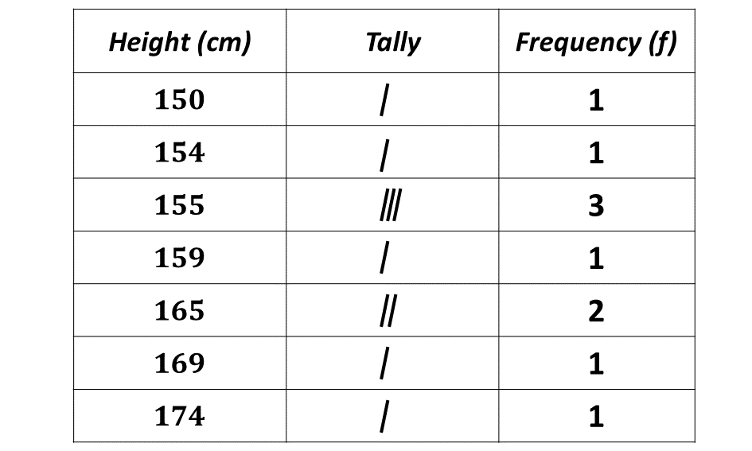

GUIDE (BECE - 1990)
Try to solve each question within 15 minutes. Time yourself and see how well you can do. After you are done solving the section B, try the timed section A, multiple choice questions at the bottom of the page.
Good luck and remember to check your answers with the solutions provided. If you have any questions, feel free to ask your teacher or refer to the video lessons for more help.
PAST QUESTIONS 1991
Time yourself to improve on your speed. You are to use not more than 60 minutes for this section.
Click on the link below when you are ready.
Highest score: \(\mathbf{\frac{28}{40}}\)
Queenster Obeng
Try the questions first, using not more than 15 minutes for each question, and watch the accompanying videos to see how the questions are solved.
Question 1
-
If \(X=\) {Prime numbers less than 13} and \(Y=\) {odd numbers less than 13}
-
Three school children share some oranges as follows:
Akwasi gets \(\frac{1}{3}\) of the total, and the remainder is shared between Abena and Jantuah in the ratio \(3 : 2\). If Jantuah gets 24 oranges, how many does Akwasi get?
\((i)\) List the members of \(X\) and \(Y\).
\((ii)\) List the members of \(X \cap Y\) and \(X \cup Y\)
Solution
Question \((1.a.i.)\)
\(X = \){Prime numbers less than 13}
\(\therefore \ X = \{2, 3, 5, 7, 11\}\)
\(Y = \){Odd numbers less than 13}
\(\therefore \ Y = \{1, 3, 5, 7, 9, 11\}\)
Question \((1.a.ii.)\)
\(X = \{2, 3, 5, 7, 11\}\)
\(Y = \{1, 3, 5, 7, 9, 11\}\)
\(\Rightarrow X \cap Y = \{3, 5, 7, 11\} \)
\(\Rightarrow X \cup Y = \{1, 2, 3, 5, 7, 9, 11\} \)
\(\therefore X \cap Y = \{3, 5, 7, 11\}\) and \(X \cup Y = \{1, 2, 3, 5, 7, 9, 11\}\)
Solution
Fraction of the total oranges \(\Rightarrow 1\)
Fraction given to Akwasi \(\Rightarrow \frac{1}{3}\)
Fraction left \(\Rightarrow 1 - \frac{1}{3}\)
\(\hspace{1.65cm} \Rightarrow \frac{2}{3}\)
Abena's ratio \(\Rightarrow 3\)
Jantuah's ratio \(\Rightarrow 2\)
Total ratio \(\Rightarrow 3 + 2 = 5\)
If Jantuah's ratio, \(2 \Rightarrow\) 24 oranges
Then total ratio, \(5 \Rightarrow \frac{5}{2} \times 24\) oranges
\(\hspace{2.5cm} \Rightarrow 5 \times 12\) oranges
\(\hspace{2.5cm} \Rightarrow 60\) oranges
\(\therefore\) the remainder was 60 oranges.
If fraction left, \(\frac{2}{3} \Rightarrow 60\) oranges
then, Akwasi's fraction, \(\frac{1}{3} \Rightarrow \frac{\frac{1}{3}}{\frac{2}{3}} \times 60\) oranges
\(\Rightarrow (\frac{1}{3} \div \frac{2}{3}) \times 60\) oranges
\(\Rightarrow (\frac{1}{3} \times \frac{3}{2}) \times 60\) oranges
\(\Rightarrow \frac{1}{2} \times 60\) oranges
\(\Rightarrow 30\) oranges
\(\therefore\) Akwasi had 30 oranges.
Question 2
-
Construct a triangle \(XYZ\) in which \(|YZ|=6cm\), \(\angle YZX=\) 60° and \(|ZX|= 9cm\). Measure \(|XY|\)
-
\((i)\) Construct the mediator of \(XY\)
Using a ruler and a pair of compasses only
\((ii)\) Draw a circle center \(X\) and a radius of 5 cm. Measure \(|YA|\), where \(A\) is the point of intersection of the mediator and the circle in the triangular region \(XYZ\)
Solution
Question 3
-
Solve the equation \(\dfrac{2x-1}{3} - \dfrac{x-2}{4} =1\)
Solution
\(\dfrac{2x-1}{3} - \dfrac{x-2}{4} =1\)
Multiplying through by an L.C.M of \(12\)
\(\Rightarrow 12 \left(\dfrac{2x-1}{3}\right)\)\(- 12 \left(\dfrac{x-2}{4}\right)\)\(=12 (1)\)
\(\Rightarrow 4(2x - 1)\)\(- 3(x - 2)\)\(= 12\)
\(\Rightarrow 8x - 4\)\( - 3x + 6\)\(= 12\)
\(\Rightarrow 8x - 3x\)\( - 4 + 6\) \(= 12\)
\(\Rightarrow \hspace{1.2cm} 5x + 2\) \(= 12\)
\(\Rightarrow \hspace{1.8cm} 5x = 12 - 2\)
\(\Rightarrow \hspace{1.8cm} 5x = 10\)
\(\Rightarrow \hspace{1.6cm} \dfrac{5x}{5} = \dfrac{10}{5} \)
\(\Rightarrow \hspace{1.8cm} x = 2\)
\(\therefore x\) is 2.
-
Factorise completely \(2ap+aq-bq-2bp\)
Solution
\(2ap+aq-bq-2bp\)
\(\Rightarrow (2ap+aq)-(bq+2bp)\)
\(\Rightarrow a(2p+q)-b(q+2p)\)
\(\Rightarrow a(2p+q)-b(2p+q)\)
\(\Rightarrow (2p+q)(a-b)\)
-
Given that \(m = -2\) and \(n = \dfrac{3}{4}\), find the value of
\((i)\) \(m^2(n-1)\)
\((ii)\) \(n^2 - \dfrac{3}{m}\)
Solution
\(m = -2\)
\(n = \dfrac{3}{4}\)
Question (3.c.\(i\))
\(m^2(n-1)\)
Substituting \(m\) and \(n\) into expression:
\(\Rightarrow (-2)^2(\frac{3}{4}-1) \)
\(\Rightarrow 4(\frac{3}{4}-1) \)
Expanding the bracket:
\(\Rightarrow (4 \times \frac{3}{4}) - (4 \times 1) \)
\(\Rightarrow 3 - 4 \)
\(\Rightarrow - 1 \)
\(\therefore\) when m is \(-2\) and \(n\) is \(\frac{3}{4}\), \(m^2(n-1)\) is \(-1\).
Question (3.c.\(ii\))
\(n^2 - \dfrac{3}{m}\)
Substituting \(m\) and \(n\) into expression:
\(\Rightarrow (\dfrac{3}{4})^2 - \dfrac{3}{-2}\)
\(\Rightarrow (\dfrac{3^2}{4^2}) + \dfrac{3}{2}\)
\(\Rightarrow \dfrac{9}{16} + \dfrac{3}{2}\)
\(\Rightarrow \dfrac{9 \ + \ 8(3)}{16}\)
\(\Rightarrow \dfrac{9 \ + \ 24}{16}\)
\(\Rightarrow \dfrac{33}{16}\)
\(\Rightarrow 2\dfrac{1}{16}\)
\(\therefore\) when m is \(-2\) and \(n\) is \(\frac{3}{4}\), \(n^2 - \frac{3}{m}\) is \(2\frac{1}{16}\).
Question 4
-
The following table shows the distribution of voters in an election for class prefect.
-
The height in centimeters of 10 school children are as follows:

\((i)\) Draw a pie chart to illustrate the information.
\((ii)\) What fraction of the votes was cast for Borquaye?
Question 4.a.\((i)\)
Total number of votes
\(\Rightarrow 6 + 12 + 18\)
\(\Rightarrow 36\)
Angle of sector \(= \dfrac{frequency}{total \ frequency} \times 360^\circ\)
Angle of sector for Acquaye:
\(\Rightarrow \dfrac{6}{36} \times 360^\circ\)
\(\Rightarrow 6 \times 10^\circ\)
\(\Rightarrow 60^\circ\)
Angle of sector for Borquaye:
\(\Rightarrow \dfrac{12}{36} \times 360^\circ\)
\(\Rightarrow 12 \times 10^\circ\)
\(\Rightarrow 120^\circ\)
Angle of sector for Commey:
\(\Rightarrow \dfrac{18}{36} \times 360^\circ\)
\(\Rightarrow 18 \times 10^\circ\)
\(\Rightarrow 180^\circ\)
Pie chart showing the distribution.
Question 4.a.\((ii)\)
Fraction of votes cast for Borquaye
\(\Rightarrow \dfrac{Borquaye's \ votes}{Total \ votes}\)
\(\Rightarrow \dfrac{12}{36}\)
\(\Rightarrow \dfrac{1 \times 12}{3 \times 12}\)
\(\Rightarrow \dfrac{1}{3}\)
\(\therefore\) fraction of votes cast for Borquaye is \(\dfrac{1}{3}\).
165, 165, 155, 159, 174,
154, 169, 155, 155, 150
\((i)\) Make a frequency table for the data.
\((ii)\) Use your table to find the mode and the median of the distribution.
Question 4.b.\((i)\)
Frequency table for distribution.
Question 4.b.\((ii)\)
Mode \(\Rightarrow\) the highest occuring number.
\(\therefore\) mode \(= 155\)
Median \(\Rightarrow\) the middle number.
median \(= \frac{155 + 159}{2}\)
median \(= 157\)
\(\therefore\) the mode and median of the distribution are 155 and 157 respectively.
To advertise on our website kindly call on 0208711375 or 0249969740.